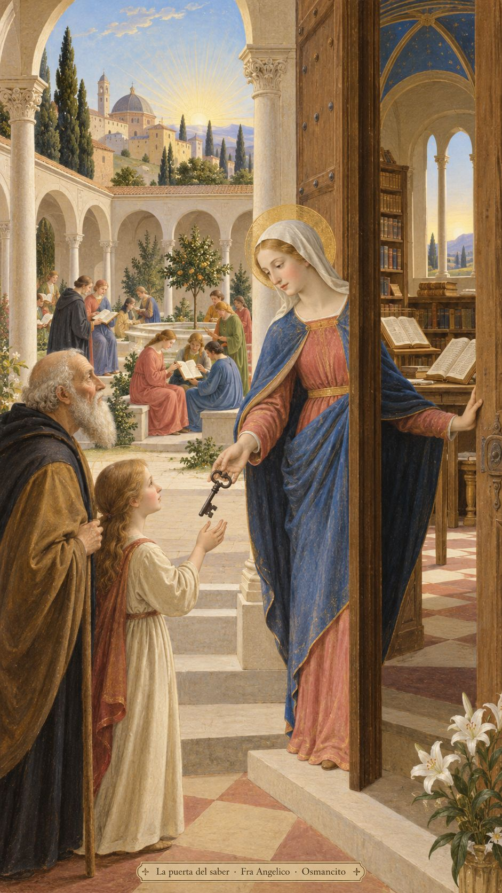
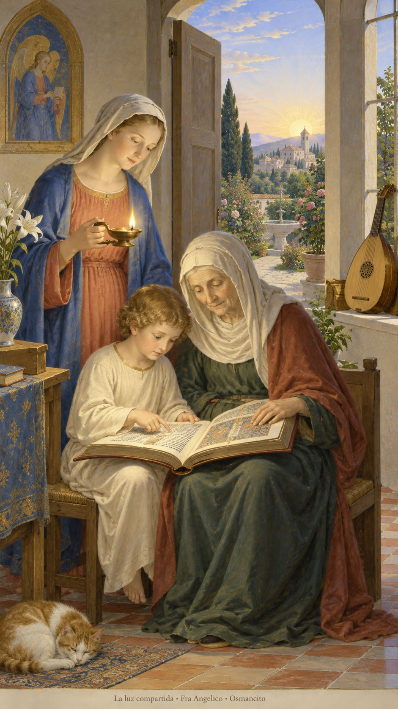
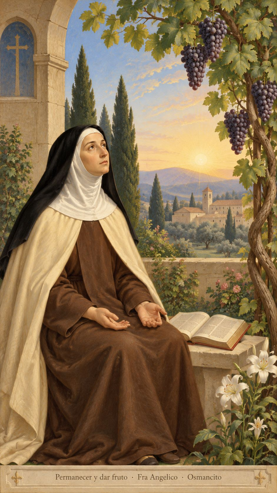

15 de octubre de 2026
¡Buenos días!
La puerta del saber
5
El nos eligió en Cristo, antes de crear el mundo, para que fuéramos santos e irreprochables a sus ojos, por el amor
Efesios 1,4. Fuente
Que no guardemos la llave de aquello que puede alumbrar a otros. Que el saber abra puertas y nunca se vuelva una cerca. Que recibamos el día como un regalo anterior a nuestros méritos, con gratitud y manos abiertas. Que honremos a quienes dijeron la verdad escuchando también las voces incómodas de ahora. Que aprendamos a preguntar sin tender trampas, a enseñar sin humillar y a compartir la luz sin creernos dueños de su llama.

- La llave entregada y la puerta abierta responden a Lucas 11: el saber se comparte, no se guarda para impedir el paso.

- El libro leído entre generaciones encarna el saber que acompaña. El instrumento recuerda el canto nuevo del Salmo 97.
¡Feliz jueves 15 de octubre!
😊🙋♂
Santa Teresa de Jesús, virgen y doctora de la Iglesia
Que sepamos esperar sin exigirle al silencio una respuesta inmediata. En la memoria de Teresa, que la oración tenga la sencillez de unas manos abiertas. Que permanezcamos unidos a lo que nos da vida, como la rama a la vid. Que aun cuando falten palabras, no nos falte confianza para acompañar a quien también espera.

- La vid recoge Juan 15; las manos abiertas y el silencio remiten a Romanos 8, cuando la oración no encuentra palabras.
¡Feliz memoria de santa Teresa de Jesús!